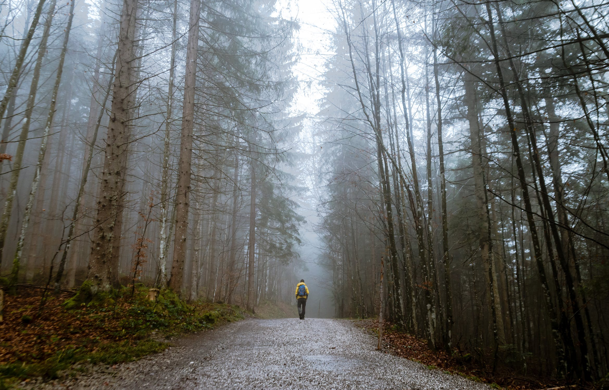

My name is Andrew Guzman and I'm a 24 year-old first generation Mexican-American born and raised in Southern California. Currently, I work as a case manager at a nonprofit where I connect San Francisco residents to information and resources. When I'm not working, I like to spend my time hiking in nature. As a city dweller, I appreciate every chance I get to immerse myself in nature. Hiking has done amazing things for my mental and physical health. What's great about hiking is that it's relatively quick and cheap to get started. The resources on this page are a few of the different tools I used that helped me prepare to start hiking!


My favorite thing about hiking is that you can decide how much time (and money!) you want to invest into doing this. If you haven't tried hiking before, you will want to start off by making sure to have at least some of the basic necessities and start looking into some beginner-friendly hiking trails in your area. You may also want to recruit a friend to go hiking with. As I mentioned before, you get to decide how much money you want to spend buying hiking gear, but some of the absolute basic necessities would be:
If you are not sure where to start your research, two really good resources I want to recommend are American Hiking Society and REI. If you aren't sure where to find beginner-friendly hikes in your area, visit AllTrails. This is what helped me find most of my favorite trails. With hiking, you don't have to spend so much time researching and spending money before you can start hiking. Have fun!
